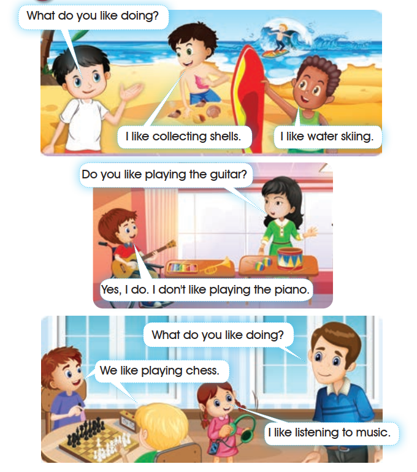
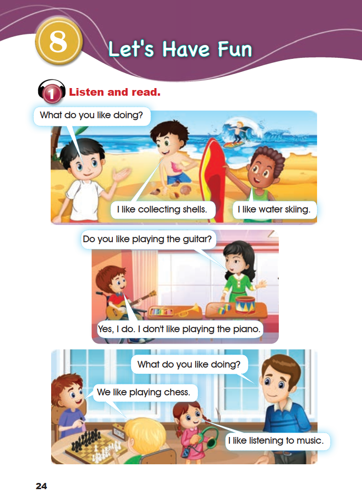
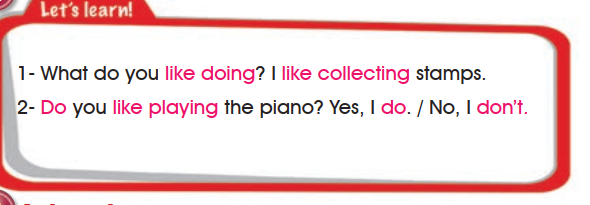
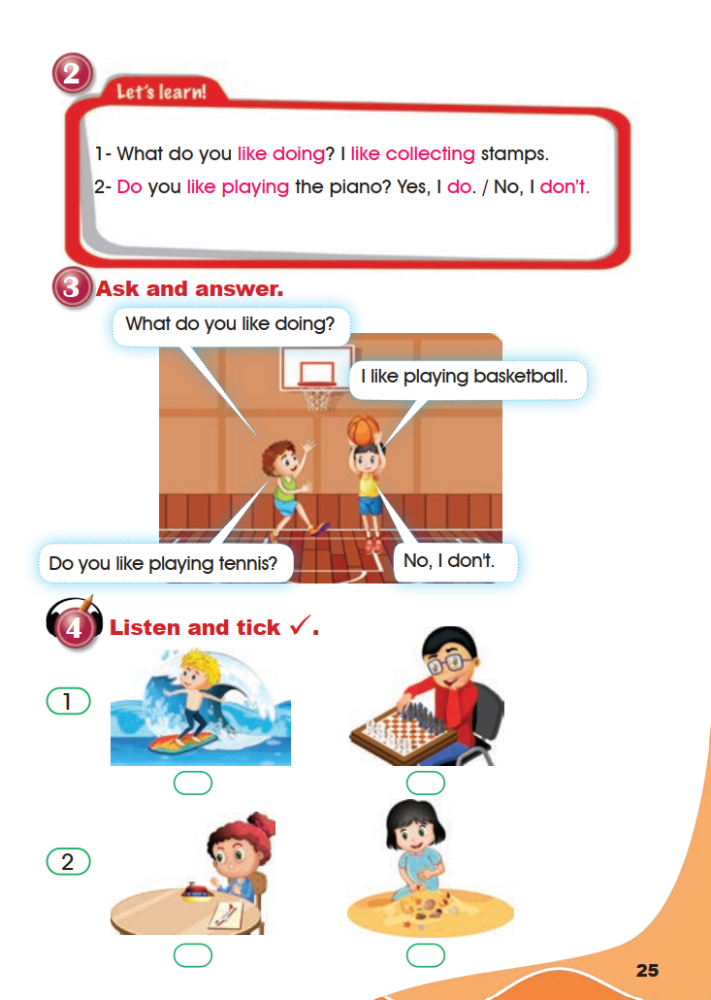
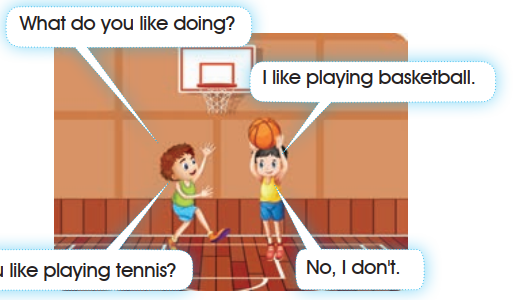
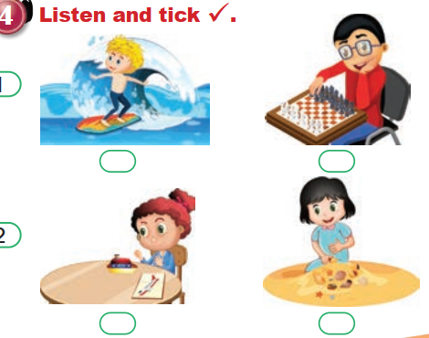
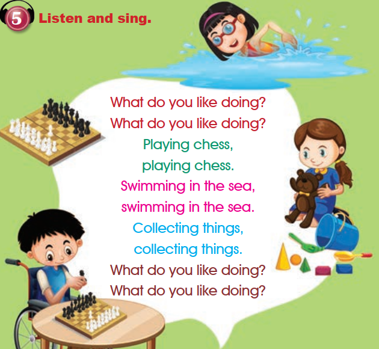
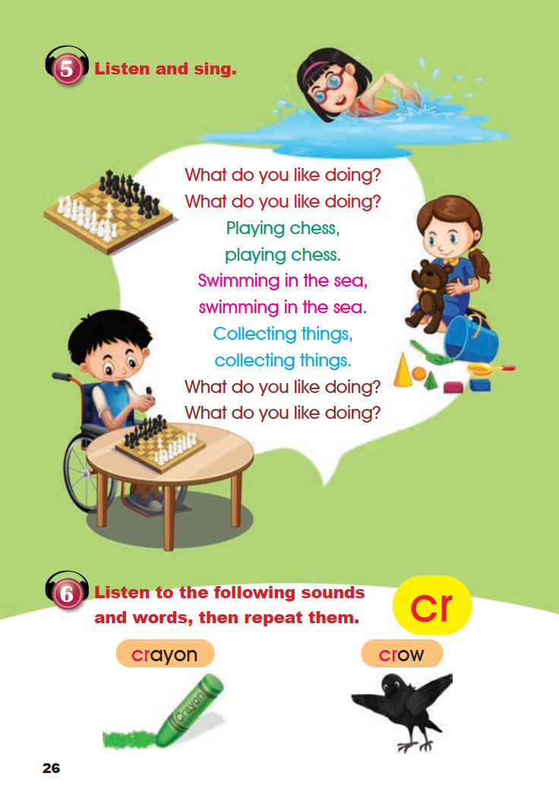
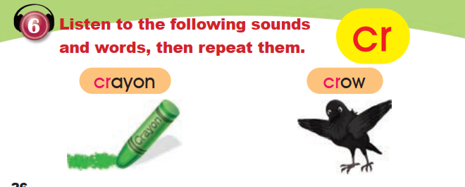

Pupil’s Book
Let’s Have Fun · Pupil’s Book · pages 24–26. All six printed activities are kept in source order.
1. Listen and read.

Speech bubbles from the beach, music and chess pictures. Read them aloud or listen to the recording when it is available.
Audio exception. The recording was not supplied, so the dialogue is shown as printed and nothing is checked on screen.
What do you like doing?
I like collecting shells.
I like water skiing.
Do you like playing the guitar?
Yes, I do. I don’t like playing the piano.
What do you like doing?
We like playing chess.
I like listening to music.
Open the source page · Pupil’s Book · p. 24
The original supplied scan, unchanged.

2. Let’s learn!

The highlighted words show the pattern: what do you like doing, I like -ing; do you like playing, yes I do or no I don’t.
1- What do you like doing? I like collecting stamps.
2- Do you like playing the piano? Yes, I do. / No, I don’t.
Open the source page · Pupil’s Book · p. 25
The original supplied scan, unchanged.

3. Ask and answer.

Speaking practice with a partner, using the picture of the basketball court. It has no written answer.
What do you like doing?
I like playing basketball.
Do you like playing tennis?
No, I don’t.
Open the source page · Pupil’s Book · p. 25
The original supplied scan, unchanged.
4. Listen and tick ✓.

Four pictures in two numbered rows, each with one tick circle.
Audio exception. This activity depends on the recording, which was not supplied. The pictures are reproduced, but no ticks are given and nothing is checked on screen.
Open the source page · Pupil’s Book · p. 25
The original supplied scan, unchanged.
5. Listen and sing.

The printed song lines are transcribed exactly. The tune is on the recording.
Audio exception. The tune is on the recording, which was not supplied. The printed words are transcribed exactly as printed.
What do you like doing?
What do you like doing?
Playing chess,
playing chess.
Swimming in the sea,
swimming in the sea.
Collecting things,
collecting things.
What do you like doing?
What do you like doing?
Open the source page · Pupil’s Book · p. 26
The original supplied scan, unchanged.

6. Listen to the following sounds and words, then repeat them.

The sound cr with the words crayon and crow, and their pictures.
Audio exception. The sound and the repetition depend on the recording, which was not supplied. The printed sound and words are listed here.
Sound: cr
crayon · crow
Open the source page · Pupil’s Book · p. 26
The original supplied scan, unchanged.